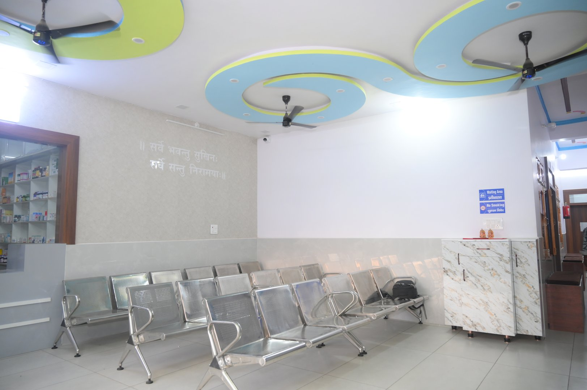
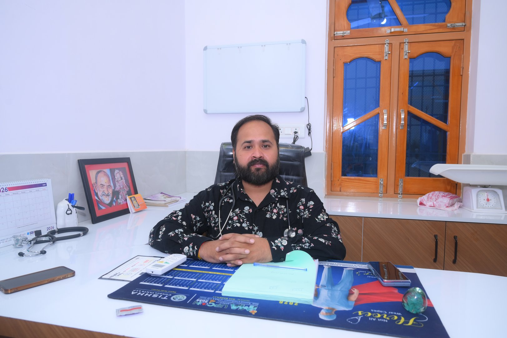
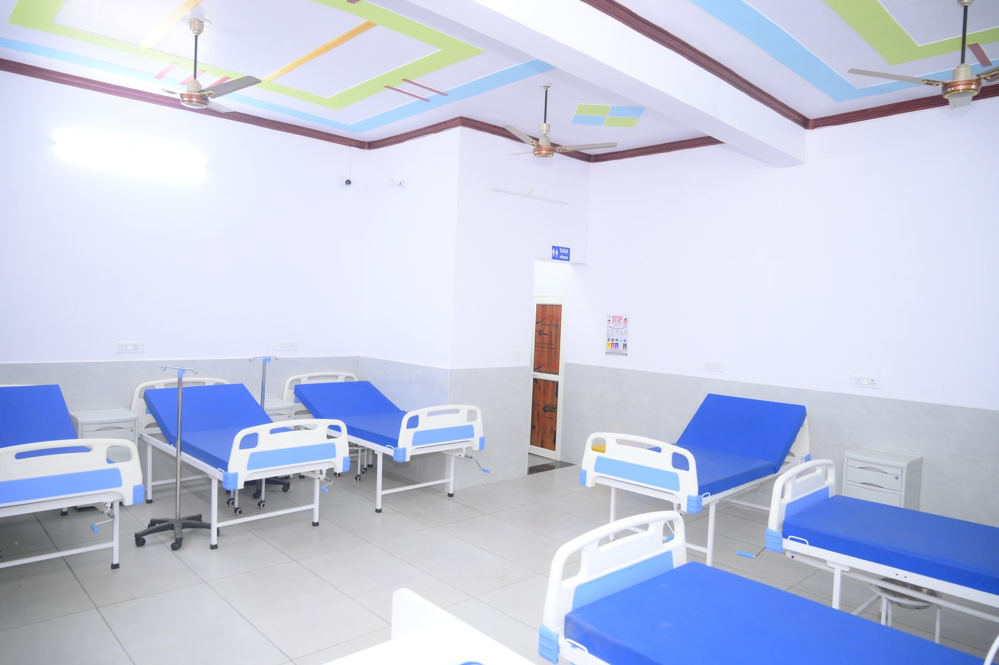
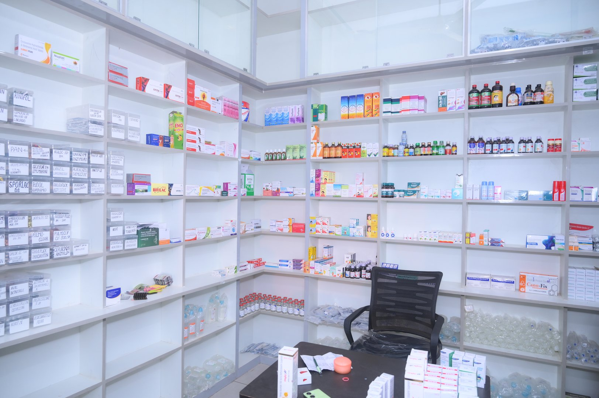

Hospital Building & Accessible Location
Situated prominently in Krishan Vihar Colony opposite the 132 KV Power House in Aonla, the facility features wide roadside accessibility, dedicated ramp entry, and ample parking space for patient vehicles and emergency arrivals.

Patient Registration & Waiting Lobby
A spacious, air-cooled reception area designed to minimize waiting fatigue. Our reception team assists patients with digital OPD tokens, emergency triage, and prescription coordination.

Private Doctor Consultation Chamber
Dr. Hardeep Singh's chamber ensures complete privacy and comfort for physical examination. Equipped with modern diagnostic instruments, digital bp monitors, and clinical assessment tools.

Day Care Observation Ward Beds
For patients who require short-stay medical observation, IV fluid hydration (Normal Saline, Ringer Lactate), injectable antipyretics for stubborn fevers, or stabilization following acute pain or diarrhoea.

In-House Medical Pharmacy & Store
Patients do not need to wander outside in search of prescribed medications. Our in-house pharmacy stocks genuine branded medicines, pediatric oral solutions, emergency ampoules, sterile dressing materials, and essential IV fluids.